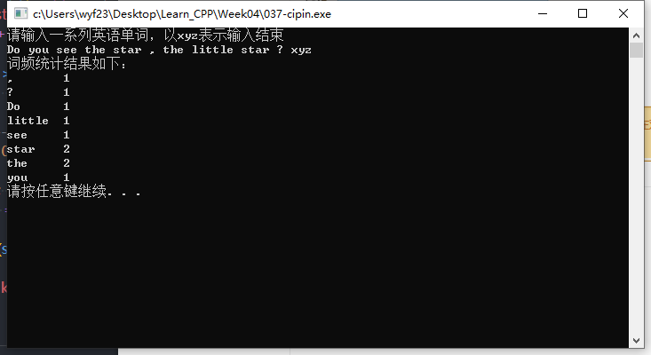

简介：词频统计
【实例名称】
词频统计
- 输入一系列英文单词（单词之间用空格隔开），用“xyz”表示输入结束。
- 统计各单词出爱心的次数（单词不区分大小写），对单词按字典顺序进行排序后输出单词和词频。
【运行结果】
请输入一系列英文单词（单词之间用空格隔开），用“xyz”表示输入结束
Do you see the star ,the little star?xyz
词频统结果如下：
, 1
? 1
Do 1
……
【问题分析】
①数据结构。本题中每个单词有两条信息要记录，一是单词本身，二是单词出现的次数，即使1次，所以可用结构体。
②查找。每输入一个单词，要在已有单词序列中查找，找到在次数上加1，找不到则添加一个新单词，次数置1。
③排序————选择排序
先将待排序序列分成有序部分和无序部分，重复地从无序部分中找出最大的元素，放在有序部分的最后，直到无序部分只有一个元素。如果有N个元素要排序，这样的选择过程只需要N-1次。
【算法描述】
查找算法
- ①输入单词word；
- ②如果word为结束标识xyz；转④，否则继续；
- ③顺序查找word是否在字典中。
- 若已存在字段中，则将对应的词频加1，返回①
- 若字典中不存在该单词，则向词典中添加新的单词，返回①
- ④对词典进行排序；
- ⑤输出词典内容。
选择排序算法
- ①设待排序元素用数组A[i]表示，i=0，1，…，N-1；
控制N-1次选择，每次选择“最小”元素与A[i]互换
- ②对i=0，…，N-2
- ③k=i//设A[i]是当前最小的元素，它的下标保存在k中
- ④对j=i+1，…，N-1 //与后面的所有元素比较
若A[j]<A[k]，则 //后面的更小
k=j 记写最小元素的下标
- ⑤如果k!=i //A[i]不是最小的元素
tmp=A[i]，A[i]=A[k]，A[k]=tmp //交换最小元素和A[i]
- ⑥N-1次选择结束后，数组A中的元素有序
【示例代码】
1
2
3
4
5
6
7
8
9
10
11
12
13
14
15
16
17
18
19
20
21
22
23
24
25
26
27
28
29
30
31
32
33
34
35
36
37
38
39
40
41
42
43
44
45
46
47
48
49
50
51
52
53
54
55
56
57
58
59
60
61
62
63
64
65
66
| #define _CRT_SECURE_NO_WARNINGS
#include <iostream>
#include <cstring>
using namespace std;
struct WordList
{
char word[20];
int freq;
};
int main()
{
WordList List[1000];
int N = 0;
int i, j, k;
char tmp[20];
cout << "请输入一系列英语单词，以xyz表示输入结束" << endl;
cin >> tmp;
while (strcmp(tmp, "xyz") != 0)
{
for (i = 0; i < N; i++)
{
if (strcmp(List[i].word, tmp) == 0)
{
List[i].freq++;
break;
}
}
if (i >= N)
{
strcpy(List[i].word, tmp);
List[i].freq = 1;
N++;
}
cin >> tmp;
}
for (i = 0; i < N - 1; i++)
{
k = i;
for (j = i + 1; j < N; j++)
{
if (strcmp(List[j].word, List[k].word) < 0)
{
k = j;
}
}
if (k != i)
{
WordList tmp;
tmp = List[i];
List[i] = List[k];
List[k] = tmp;
}
}
cout << "词频统计结果如下：" << endl;
for (i = 0; i < N; i++)
{
cout << List[i].word << '\t' << List[i].freq << endl;
}
system("pause");
return 0;
}
|
【运行结果】
